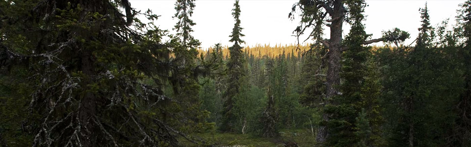
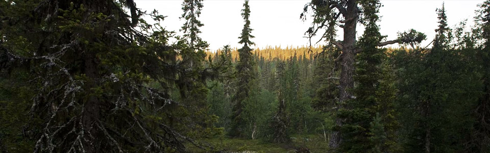

A T R E X | Open-source Python software
ATREX (Advanced Tools for Research in Extreme Xtallography) is an integrated multiplatform, open-source Python software package utiliziing a combination of existing, well-tested and widely-used software components.
ATREX provides unique capabilities to process diffraction image data from samples in all forms from glasses and melts, bulk powders, through coarse multi grains to single crystals.
The package supports new data types produced by novel ultrafast X-ray imaging detectors, offers extensive automated serial processing capabilities for massive data sets, and allows real-time data analysis for time-constrained decision-driven synchrotron experiments.
ATREX also includes database access capabilities utilzing the free American Mineralogist Crystal Structure Database.